The scene tab 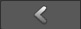 will display information about the current road network. You can choose the preferred handle to move markers and after selecting a road or crossing object the Inspector will display information about that object.
After adding a road or selecting a marker (blue sphere handle) of an existsting road the road properties are displayed:
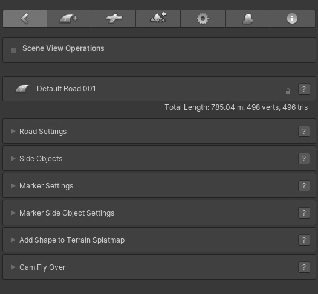
The small lock icon on the right of the road name can be used to lock the road and disable all controls.
Then below the road name on the, the road stats are visible. The total length / distance in meters or km (this is based on 1 Unity Unit is 1 meter), the total vertices and triangles.
The controls are divided over 6 collapsible sub menus. Each sub menu can open separately and when holding the Shift key down, selecting a sub menu will close all other open sub menus.
The lock icon on the right of the road name canm be used to lock all road settings. The road cannot be edited in this state. Togther with the "Exclude Locked Objects" option in Scene Settings, this can also be used to hide the road handles in Scene View.
The question mark buttons will open the relevant online documentation.
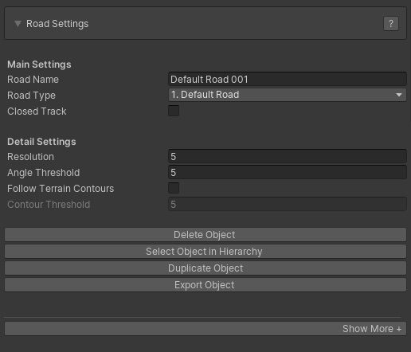
It is possible to display all Road Settings Controls (the below UI View) or minimize the Road Settings UI to most frequently used controls (the above UI View). Pressing the "Show More +" tab at the bottom will display all controls.
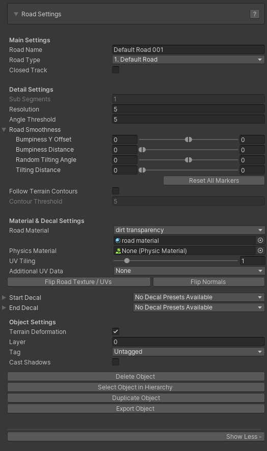
Main Settings:
- Road Name: The name of the road
- Road Type: the selected road type. This can be changed to any other road type as long as the road is not connected to a crossing. Otherwise it can only be change to road types with a similar shape setup, node count that also matches the shape of the crossing connection.
- Closed Track: This will loop the road, ideal for generating race tracks
- Road Width: The width of the road. This field will not be displayed when a road type is assigned. In that case the road width can be changed in the General Settings > Road Types. That way the width of both all road instances and crossing connections based on this road type can be updated instantly
Detail Settings:
- Sub Segments [Pro]: This can be used to subdivide the road mesh for more detail. Note that this is not supported yet on dynamic crossings. This field will not be disabled when a road type is assigned.
- Resolution: the geometry resolution in meters
- Angle Threshold [Pro]: This can be used to optimize the road geometry while still maintaining detail in bends. Try values around 5 and increase the road resolution to 10 or 20. The vertex / triangle count will drop significantly. In general it is not recommended to use a lower Angle Threshold than 4 or 5 unless you are after high definition.
- Road Smoothness [Pro]:
Bumpiness Y Offset: The smoothness level of the road controllable through Min Max values
Bumpiness Distance: The distance controllable through Min Max values
Random Tilting Angles: Adds additional tilting to the road controllable through Min Max values
Tilting Distance: The distance over which the tilting takes place
- Follow terrain Contours [Pro]: The road will auto adjust to the terrain shape, this will greatly speed up the workflow as less markers will be required
- Contour Treshold [Pro]:The lower values the more the road will match the terrain shape, use higher values for roads like motorways. This is a DelayedFloatField, hit enter to update the road after changing the value
Material & Decal Settings:
- Road Material: The material assigned to this road. The dropdown lists all materials in /EasyRoads3D/Resources/Materials/Roads and can be used to quickly assign another material. It is recommend though to work with road types and apply the material changes to the road type
- Physics Material: Optionally a physics material can be assigned
- UV Tiling: This controls the tile size of the used road texture
- Additional UV data: Additionally uv data matching the terrain boundingbox or uv data tiled on a specified distance can be generated in UV channel 4
- Flip Road Texture / UVs: This will swap the uv coordinates of the road. By default texturing of opposite roads on a connection will match regardless how they are connected to the crossing. If you do not want that for specific roads, you can change that by flipping the road texture of a road. This option can also be useful for roads connected to custom connectors when the UVs look wrong or flipped
- Flip Normals: This can be useful for tracks generated through the custom prefab system. Soemtimes you want thw normals to point to the other direction like for tunnel / cave type of shapes
- Start Decal: The currently selected Decal at the start, this can be updated manually by selecting another deval from the dropdown. Decals can be used as a transition between road types at crossings or to add variation, cracks, road fixes. Decal prefabs can be added per road type in General Settings > Road Types
- End Decal: The currently selected Decal at the start, this can be updated manually by selecting another deval from the dropdown. Decals can be used as a transition between road types at crossings or to add variation, cracks, road fixes. Decal prefabs can be added per road type in General Settings > Road Types
Object Settings:
- Terrain Deformation: This can be used to turn off terrain deformation for this particular road, for instance roads used as bridge segments
- Layer: The layer that this object is in
- Tag: The tag that this object has
- Cast Shadows: Toggle this on when the object should cast shadows
Buttons:
Side Objects
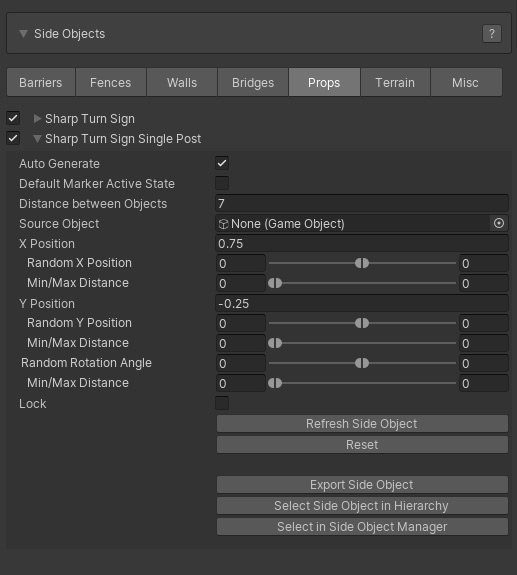
All available side objects in the scene will be listed here similar to how they are listed in the Side Object Manager. You can select which side objects to activate for this road object.
The foldout will show additional controls to adjust the default settings of this particular instance of the side object. Additionally the "Auto Generate" option when available (for guard rails, retaining walls, bridges, tunnels)) can be disabled. In that state the side object can be activated per marker.
5 additional buttons are available:
- Refresh Side Object: This option can be useful when side objects are generated randomly
- Reset: This will reset the side object back to the default values in the Side Object Manager
- Export Side Object: This will export the side object to t the .obj format
- Select Side Object in Hierarchy: This will select the side object in the hierarchy
- Select in Side Object Manager: this will open the Side Object Manager and select this side object
Marker Properties
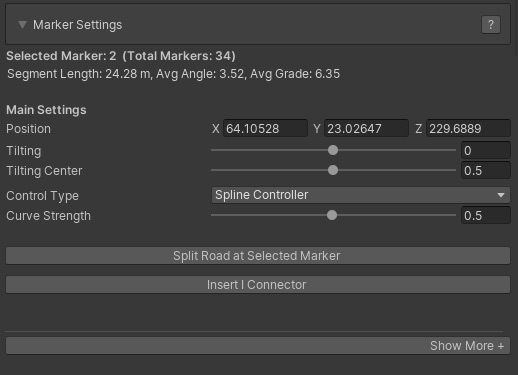
It is possible to display all Road MarkerSettings Controls (the below UI View) or minimize the Road Marker Settings UI to most frequently used marker controls (the above UI View). Pressing the "Show More +" tab at the bottom will display all controls.
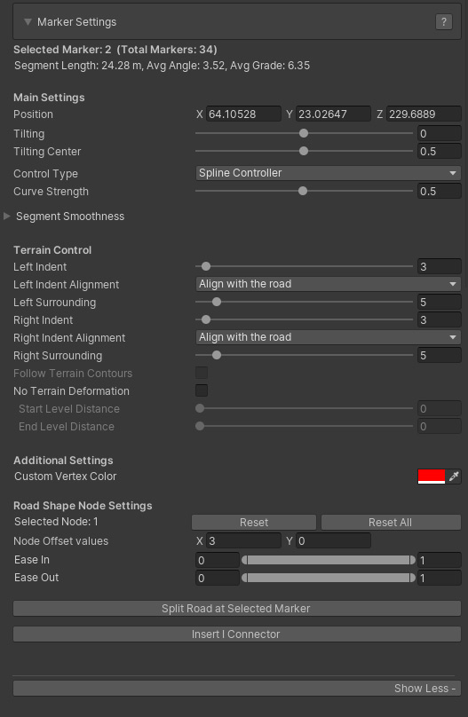
At the top the selected marker number will be displayed followed by the marker section distance the average angle and the average grade.
Main Settings:
- Position: The XYZ position of the selected marker
- Tilting [Pro]: The tilting angle of the selected marker (use the E key to control this directly in scene view). For objects with terrain deformation the rotation angle is locked to max 30 degrees. Other objects can rotate on the full 360 degrees which can be useful for FX type tracks.
- Tilting Center [Pro]: The origin of the rotation.
- Control Type [Pro]: Per marker you can select the Control Type. Spline Controller is the default Controller and will create smooth curves. Straight XZ will connect this marker with the next marker on a straight line but with a smooth height transition. Straight XYZ will connect this marker with the next marker on a perfact straight line. Circular will create a circular shape between the selected marker and the next marker based on the angle with the previous marker.
- Curve Strength: This will be available when using the Spline Controller as the Control Type and will control the strength of the spline shape.
- Segment Smoothness:
Bumpiness Y Offset: The smoothness level for this marker section controllable through Min Max values
Bumpiness Distance: The bumpiness distance for this marker section controllable through Min Max values
Random Tilting Angles: Adds additional tilting to the marker section controllable through Min Max values
Tilting Distance: The distance over which the tilting takes place
Terrain Control:
- Left Indent: The distance on the left side of the road over which the terrain should be flattened at the same height. This value can also be adjusted directly in the Scene View window by dragging the respective small square handle provided that "Highlight Indents" in General Settings > Scene Settings is active.
- Left Indent Alignment: This can be used to manipulate terrain deformation in hilly areas. Align with Road is the default option and generally you want to use this setting. The two other options are useful in hilly areas where you want to add more definition to the terrain near the road by faking terrain through meshes which can be done through the side objects system, specifically the Shape Object type. Align with the terrain will snap the indent values to the terrain height at that point. Align with surrounding position will set the indent position at the same height as the corresponding left surrounding position.
- Left Surrounding: The distance over which the terrain should gradually be flattened to the original terrain height. This value can also be adjusted directly in the Scene View window by dragging the respective small square handle provided that "Highlight Surroundings" in General Settings > Scene Settings is active.
- Right Indent: The distance on the right side of the road over which the terrain should be flattened at the same height. This value can also be adjusted directly in the Scene View window by dragging the respective small square handle provided that "Highlight Indents" in General Settings > Scene Settings is active.
- Right Indent Alignment: This can be used to manipulate terrain deformation in hilly areas. Align with Road is the default option and generally you want to use this setting. The two other options are useful in hilly areas where you want to add more definition to the terrain near the road by faking terrain through meshes which can be done through the side objects system, specifically the Shape Object type. Align with the terrain will snap the indent values to the terrain height at that point. Align with surrounding position will set the indent position at the same height as the corresponding right surrounding position.
- Right Surrounding: The distance over which the terrain should gradually be flattened to the original terrain height. This value can also be adjusted directly in the Scene View window by dragging the respective small square handle provided that "Highlight Surroundings" in General Settings > Scene Settings is active.
Note: The above Indent, Surrounding and Alignment controls are visible when the highlight surfaces in "General Settings > Scene Settings" are active, the surfaces that visualize the Indent and Surrounding areas.
- Follow Terrain Contours [Pro]: This options is enabled when the Follow Terrain Contours checkbox in the main Road Settings is toggled on. This checkbox can be used to turn off this feature for specific individual markers and, for example, create raised bends in hilly areas or make sure that auto generated side objects like tunnels or bridges will be generated in specific areas.
- No Terrain Deformation: This will deactivate terrain deformation for this marker segment which is required for example for bridge segments.
- Start Level Distance: The distance over which the terrain height will be leveled from the road height to the original terrain height at the start of the bridge segment.
- End Level Distance: The distance over which the terrain height will be leveled from the road height to the original terrain height at the end of the bridge segment.
- Fade In Distance [Pro]: This option will be displayed when the first marker is selected. You can use this to fade the road in over x meters. Note that the EasyRoads3D transparent shader is required for this. Or you can modify your own custom shader accordingly.
- Fade Out Distance [Pro]: This option will be displayed when the last marker is selected. You can use this to fade the road out over x meters. Note that the EasyRoads3D transparent shader is required for this. Or you can modify your own custom shader accordingly.
Additional Settings:
- Custom Vertex Color: this info can be used in custom shaders.
Buttons:
- Split Road at Selected Marker: This will cut the road and create a new road object at the selected marker
- Insert I Connector [Pro]: This can be used to connect non matching road types, blend road types (like asphalt / dirt roads), change the road material on a segment or break a long road in shorter sections for better performance. More Info
Additional marker options. The R key will remove all selected markers. The "I" key will insert a marker at the mouse position in the scene. More Shortcuts, Hotkeys
Marker Side Object Settings
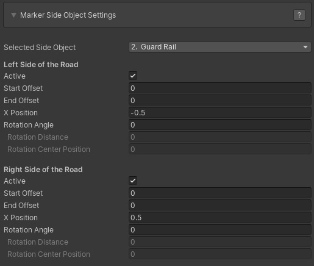
After activating a side object on a road in the main Side Object section covered above, yjer side object will be added to the dropdown that is available for each marker.
After selecting a side object marker specific controls will display. This will display a single set of controls when the side object is set up to be created relative to the center of the road in the Side Object Manager or when the "Dual Sided" control is inactive in the Side Object Manager. When the side obejct is generated relative to the left or right side of the road and when "Dual Sided" is active two sets of controls are displayed, one for each side of the road.
- Selected Side Object: The below controls will affect the currently selected side object in this dropdown
- Active: The active state for this side object for this marker
- Start Offset: The position relative to the marker where the side object should start. This option will be enabled when the previous marker is not active. This is useful for, for example, aligning bridges with the terrain. You can also set this value using the slider in scene view
- End Offset: The position relative to the next marker where the side object should end. This option will be enabled when the next marker is not active. You can also set this value using the slider in scene view which will be visible when the previous marker is not active
Tip: Use for example the R Key to toggle off the marker position handle when this is interfering with the slider handle
- X Position: By default this will inherit the "X Position" value set in the Side Object Manager. This value can be adjusted for each marker
- Rotation Angle: For each marker fixed rotations can be applied to the side object. This can be useful for example to add damage to side objects like fences or guard rails.
- Rotation Distance: The distance over which the rotation will be applied.
- Rotation Center Position: The offset relative to the selected marker for the center of the rotation.
Add Shape to Terrain Splatmap [Pro]:
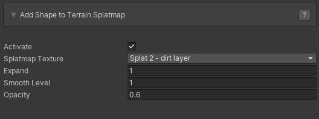
The shape of each road in the scene can be baked in the terrain splatmap. This is a useful and effective way way to blend the road in a natural way with the terrain.
- Activate: This will activate splatmap blending for this road
- Splatmap Texture: This will list all the availabe terrain splat map textures. Select which texture you want to use.
- Expand: This will increase the size of the road shape. The value is an Int value representing the number of splatmap indexes.
- Smooth Level: This will gradually blend the selected texture with the original terrain splatmap. The value is an Int value representing the number of splatmap indexes.
- Opacity: Use this to set the blend strength of the road shape with the original terrain splatmap. This is a float value in the 0..1 range.
Baking the road shape in the terrain splatmap is done in Build Mode, make sure to toggle on "Update Terrain Splatmaps" in the Build settings.
Note: The above settings can also be applied to road types. The splatmap bake settigs will be assigned automatically to new instances of that road type.
Cam Fly Over
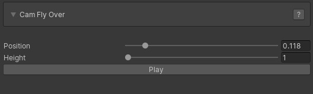
The Cam Fly Over feature is useful to quickly explore the selected road.
- Position: The Position slider will move the scene cam along the road.
- Height: This will set the scene cam height above the road
- Cam Speed: The animation speed of the Scene View cam animation
- Play: This will animate the scene view cam along the road. When the Play button is pressed the animation starts and the same button can then be used to Stop the animation.
Crossings can be attached directly to a road by selecting any marker. In the Crossing / Connection Tab 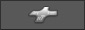 (third from the left int the Inspector) all available crossing / connection objects will be displayed. Click the object you want to attach to the selected marker. When a crossing is inserted somewhere in the middle of the road, the road will be split into two road objects.
Alternatively crossing objects can be instantiated directly to the scene, especially roundabout objects, through this same tab. When no road is selected, all crossing and connection prefabs will be visible. Select the object you want to instantiate in the scene, hold the SHIFT key and click in the scene where you want to position the object. You can repeat SHIFT + click if you want to instantiate the same object multiple times.
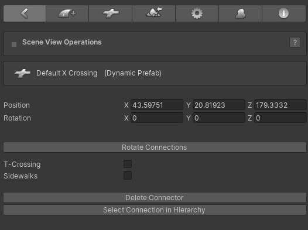
After Instantiating a connection in the scene or selecting an existing connection in the scene the Inspector will display connection properties and controls
- Position: The position of the connection
- Rotation: The rotation of the connection
- Rotate Connection: Depending on the connected roads and available free connections, this button will rotate the prefab and swap connections. This is for example useful for T Crossings to rotate or mirror the crossing
- T-Crossing: This is active on dynamic X, T crossings and will build the prefab according this status
- Sidewalks: This is active on dynamic connection prefabs and will set the global sidewalk status
- Delete Connection: This will remove the connection from the scene
- Select Connection in Hierarchy: This will select the actual rotation game object. For dynamic crossings the connection properties will be displayed.
The I Connector differs from other Connection prefabs in a way that it not a prefab physically available in the assets folder or in the Connection Prefabs tab, the 3rd tab from the left in the Inspector.
I Connectors can be attached to any marker through the Insert I Connector button in the marker section. If this is not the first or last marker of the selected road, the road will be split in two roads at the selected marker with the I Connector in between the two.
I Connectors can be used for:
1) Blending roads, for example asphalt roads and dirt tracks
2) Using different materials on a specific road segment
3) Connecting non matching road types
4) Cut roads in pieces for occlusion culling or streaming road network sections usually terrain tile specific.
I Connector Properties
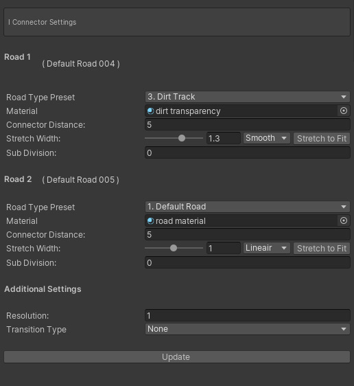
- Road Type Preset: The road type of the connected road. If no road is connected, new roads pulled out of that connection will be of the selected road type.
- Material: The material assigned to the road. This currently has no function.
- Connector Distance: By default the IConnector will connect both roads. Setting a Connector Distance will make it possible to adapt road widths and / or blend different road types.
- Stretch Width: This will adapt the width over the connection distance. Options are Lineair, exponentional and smooth. "Strech to fit" will auto auto set the stretch level to match width of the other road.
- Sub Division: Stretching can result in zigzag type of texturing. The Sub Division level will be useful here. The higher the value the more the zig zag effect will be reduced.
- Resolution: The geometry resolution of the Connection
- Transition Type: The type of transition, [None], [Blend textures] or [Texture Transition]. Depending on the selection the below options will display
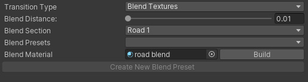
Blend Textures:
- Blend Textures: This will activate the blend options
- Blend Distance: The distance over which the textures will blend
- Blend Section: The blending can be done over the main connection (road 1), road 2 or over both sections. In general you want to use the wider road. For example a wider asphalt road with dirt track blending on the asphalt section.
- Blend Presets: This is not active yet. It is intended to auto assign I Connector settings based on the involved road types.
- Blend Material: The material used for the blending. Examples are the shaders "ER Dual Road Blend" for two different road types and "ER Single Road Blend" for the same road types. The "Build" button will auto set the material based on the materials on the connected road objects provided that these shaders have standard Unity property names are (_MainTex, _BumpMap, _Metallic, _Glossiness, _Color, etc.)
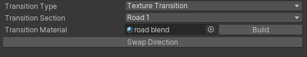
Texture Transition:
- Transition section: On which of the two roads will the transition take place
- Transition Material: The material that should be used for the transition. The "Build" button will auto set the material based on the materials on the connected road objects provided that these shaders have standard Unity property names are (_MainTex, _BumpMap, _Metallic, _Glossiness, _Color, etc.)
- Swap Direction: Swap the UV coordinates so the transition is reversed
|